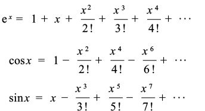
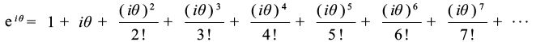
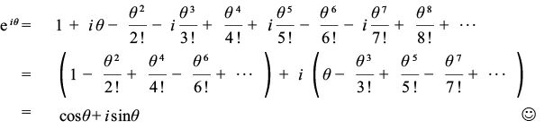
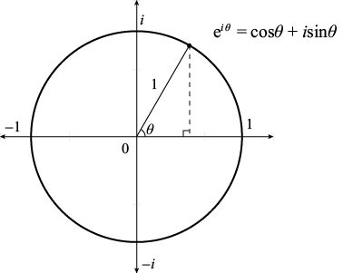

数字e的研究与推广得益于伟大的数学家莱昂哈德·欧拉，也是由欧拉来命名的。有人认为，欧拉之所以选择用字母e来表示这个数字，是因为这是他姓氏的首字母。尽管大多数数学史研究者都不同意这个说法，但还是有很多人把e称为欧拉数字。
我们已经介绍了函数ex、cos x和sin x 的无穷级数展开式，并将在下一章解释这些无穷级数的由来。在这里，我先对这些无穷级数做一个归总：

这些公式在x为任意实数时均成立，但是欧拉勇于打破常规：如果令x为虚数，结果会怎么样？一个数的虚数次幂意味着什么？他的脑洞大开为我们带来了完美的“欧拉定理”。
定理（欧拉定理）：对于任意角θ（单位为弧度），都有：
eiθ = cosθ + isinθ
证明：为了证明上式成立，我们将 x = iθ代入ex 的无穷级数展开式中：

请大家观察i的不同次幂的特点：i0 = 1，i1 = i，i2 = –1，i3 = –i（因为i3 = i2 i = –i）。随后出现了重复现象：i4 = 1，i5 = i，i6 = –1，i7 = –i，i8 = 1，以此类推。具体来说，我们可以看出在 i 的不同次幂中，实数与虚数交替出现。因此，我们可以通过下面的代数运算，消去偶数项中的i。

至此，我们就可以证明本章开头介绍的“上帝的公式”了。令θ= π弧度（或180°），就有：
eiπ = cosπ + i sinπ = –1 + i (0) = –1
但是，欧拉定理并没有就此止步。我们在前面已经见过cosθ+ i sinθ这个表达式，它是复平面单位圆上的一个点，与x轴正方向的夹角为θ。如下图所示，欧拉定理指出，我们可以用一个非常简单的方式来表示这个点。

惊喜还没有结束！欧拉定理指出，复平面上的所有点都与单位圆上的点成比例关系。具体来说，如果复数 z 的模为R，角为θ，那么这个点就是单位圆上对应点的R倍，即：
z = R eiθ
因此，如果复平面上有两个点z1 = R1eiθ1和z2 = R2eiθ2，那么根据指数法则（含有复数），我们可以得到：
z1z2 = R1eiθ1 R2eiθ2 = R1R2ei (θ1+θ2)
上述结果表示的是一个模为R1R2、角为θ1+θ2 的复数，我们再一次证明了复数的乘法运算法则：模相乘，角相加。我们在前文中证明这个定理的时候，用的是代数运算和三角恒等式，证明过程大约有一页纸的篇幅。现在，我们在用欧拉定理证明这个法则时，证明过程只有短短的一行字，因为我们有了e这个数字！
最后，我要仿照乔伊斯·基尔默（Joyce Kilmer）的诗作《树》，为我们拥有这个极其重要的数字赋诗一首。同时，我希望乔伊斯·基尔默不要介意我这样做。
我想我永远不会看到
比e更受人喜爱的数字。
这个数字永远写不完，
它是2.718 28…
它有如此神奇的特性，
深受人们喜爱（老师们更是额手称庆）。
e为我们创造了诸多便利条件
整数处理起来变得非常容易，
定理可以由像我这样的傻瓜来证明，
但e只能由欧拉来命名。